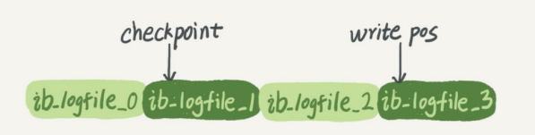

日志系统
从一个表的更新语句说起
mysql> create table T(ID int primary key, c int);
mysql> update T set c=c+1 where ID=2;
首先，像查询语句的那一套流程，更新语句同样会走一遍。
执行语句前先连数据库，这是连接器的工作。
然后这条语句会把表T上所有缓存结果都清空，这也是不建议使用查询缓存的原因。
接下来，分析器会通过词法和语法解析知道这是一条更新语句。优化器决定要使用ID这个索引。然后，执行器负责具体执行，找到这一行，然后更新.
与查询流程不一样的是，更新流程还会涉及两个重要的日志模块：redo log和binlog
重要的日志模块：redo log
在MySQL中，如果每次更新操作都落盘，然后磁盘找到对应的记录，再进行更新，整个过程的IO成本、查找成本都很高，因此引入了WAL技术，即Write-Ahead Logging(写前日志)，关键点在于先写日志，再写磁盘。
具体来说，当有一条记录需要更新时，InnoDB会先把记录写到redo log里面，并更新内存，此时就算更新完成了，InnoDB会在适当（系统比较空闲）的时候，将这个记录更新到磁盘中。
InnoDB的redo log时固定大小的，比如可以配置一组4个文件，每个文件大小是1GB，从头开始写，写到末尾就又回到开头循环写，如下图所示：

write pos是当前记录的位置，一边写一边后移，写到3号文件末尾后就又回到0号文件开头。
checkpoint是当前要擦除的位置，也是往后推移并且循环的，可以用来记录新的操作。如果write pos 追上checkpoint，说明写满了，这时候不能再执行新的更新，得停下来先擦掉一些记录（落盘），把checkpoint往前推进以下。
有了redo log，InnoDB就能保证即使数据库异常重启，之前提交的记录都不会丢失，这个过程称为crash-safe。
重要的日志模块：binlog
上述redo log是InnoDB引擎特有的日志，而Server层也有自己的日志，称为binlog（归档日志）。
为什么会有两份日志？
因为最开始的时候，MySQL里并没有InnoDB引擎，自带的MyISAM没有crash-safe能力，binlog日志只能用于归档，所以后来引入的InnoDB引擎使用redo log来实现crash-safe能力。
两种日志有以下三点不同：
- redo log是InnoDB特有的；binlog是MySQL的Server层实现的，所有引擎都能用；
- redo log是物理日志，记录的是“在某个数据页上做了什么修改”；binlog是逻辑日志，记录的是这个语句的原始逻辑，比如“给ID=2这一行的c字段加1”
- redo log是循环写的，空间固定会用完；binlog是可以追加写入的。”追加写“是指binlog文件写到一定大小后会切换到另一个，并不会覆盖以前的日志。
了解了这两个日志后，再来看执行器和InnoDB引擎再执行这个简单的update语句时的内部流程：
- 执行器先找引擎取ID=2这一行。ID是主键，引擎直接用树找到该行。如果ID=2这一行所在的数据页本来就在内存中，就直接返回给执行器；否则，需要先从磁盘读入内存，然后再返回。
- 执行器拿到引擎给的行数据，将值加上1，得到新的一行数据，再调用引擎接口写入这行新数据。
- 引擎将这行新数据更新到内存中，同时将这个更新操作记录到redo log里，此时redo log处于prepare状态。然后告知执行器执行完成了，随时可以提交事务/
- 执行器生成这个操作的binlog，并把binlog写入磁盘。
- 执行器调用引擎的提交事务接口，引擎把刚刚写入的redo log改成提交（commit）状态，更新完成。
将redo log的写入拆成了两个步骤：prepare和commit，这就是"两阶段提交"
两阶段提交
为什么必须”两阶段提交“呢？这是为了让两份日志逻辑一致。
怎样让数据库恢复到半个月内任意一秒的状态？
前面提到，binlog会记录所有的逻辑操作，并且采用的是”追加写“的形式。如果DBA承诺说半个月内可以恢复，那么备份系统中一定会保存最近半个月的所有binlog，同时系统会定期做整库备份。
当需要恢复到指定的某一秒时，比如某天下午两点发现中午十二点有一次误删表，需要找回数据，可以这么做：
- 找到最近的一次全量备份，如果运气好，可能就是昨晚的一个备份，从这个备份恢复到临时库；
- 然后，从备份的时间点开始，将备份的binlog依次取出来，重放到中午误删表之前的那个时刻。
说完了数据恢复过程，我们回来说说，为什么日志需要“两阶段提交”。这里不妨用反证法来进行解释。
由于redo log和binlog是两个独立的逻辑，如果不用”两阶段提交“，要么就是先写完redo log再写binlog，要么反过来。
- 先写redo log后写binlog。假设在redo log写完，binlog还没写完的时候，MySQL异常重启，redo log恢复后这一行c的值是1，binlog里没有记录这个语句，因此备份日志的时候，存起来的binlog里面就没有这条语句。如果需要用binlog恢复临时库的话，这个临时库就会少了这一次更新。
- 先写binlog后写redo log。如果binlog写完后crash，由于redo log没写，崩溃恢复后这个事务无效，所以这一行c的值是0.但是binlog里面记录了”把c从0改成1“这个日志。所以在用binlog来恢复的时候，就多了一个事务出来。
因此如果不用两阶段提交，那么数据库的状态可能和用它的日志恢复出来的库的状态不一致。
建议
redo log用于保证crash-safe能力。innodb_flush_log_at_trx_commit这个参数设置成1的时候，表示每次事务的redo log都直接持久化到磁盘，这样可以保证MySQL异常重启之后数据不丢失。
sync_binlog这个参数设置成1的时候，表示每次事务的binlog都持久化到磁盘，这样可以保证MySQL异常重启之后binlog不丢失。